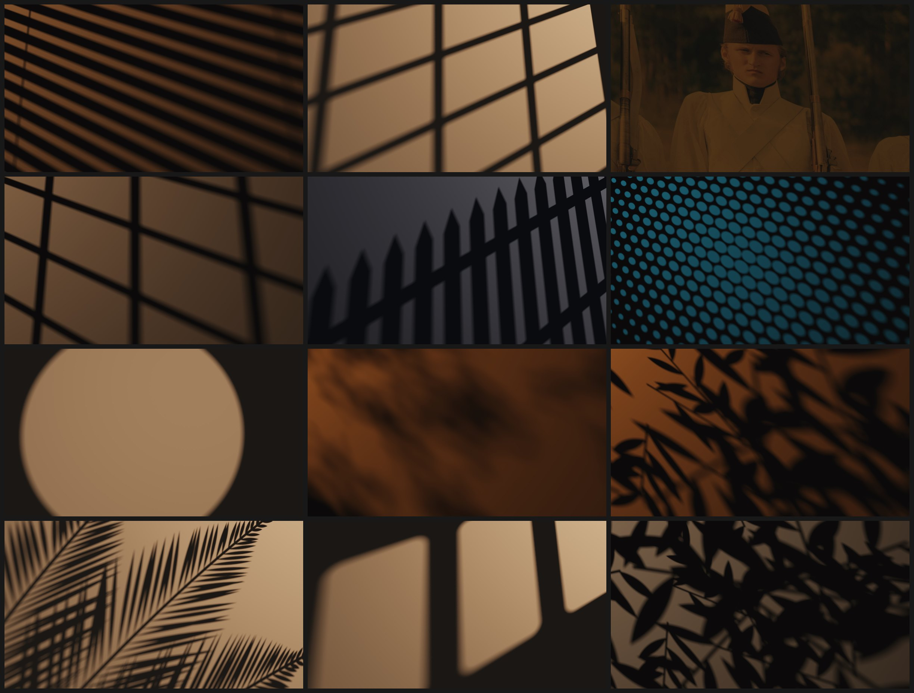

Dynamic Hollywood-style backdrops for any web page. One HTML tag.
Real light and shadow behind your content. Pick a look, move the lamp, copy the tag.
Direct it like a gaffer.
Shadow overlays are a wasted process. You buy a pack of PNGs, pick the least wrong one and fade it to 40 percent. Here you move the lamp.
- Light size
- A bigger lamp gives a softer edge.
- Cookie distance
- Closer to the wall is sharper.
- Elevation
- A low lamp stretches the shadows.
- Haze
- Smoke in the room shows the beams.
- Surface
- Plaster, linen or concrete catch the light.
Nothing is blurred. Everything is cast.
A blurred PNG is equally soft everywhere. A real shadow is sharp near the cookie and soft far from it. That is what reads as light.
- The page is the wall. Every pixel is a point on it.
- Each pixel looks at 48 points across the lamp.
- The cookie decides how much of each one it sees.
- A still scene keeps refining for a moment, then stops.
Examples

Copy the tag. Ship the light.
No dependencies. No build step. A still scene costs nothing once it has settled.
Paste both into your page. Or install it.
npm install tinseltown@latest